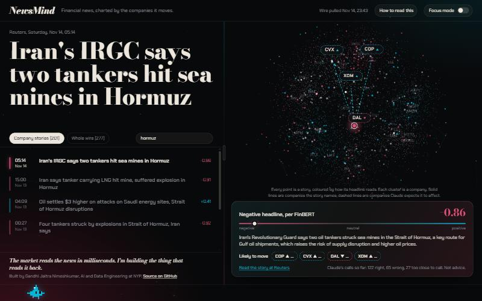
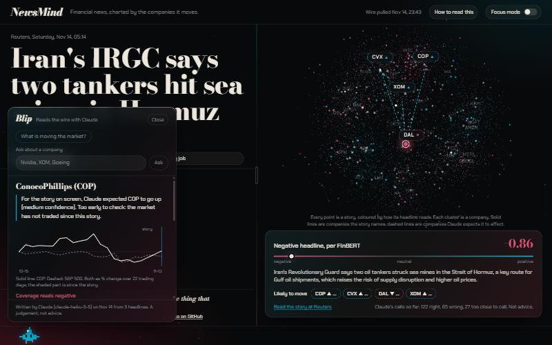

Personal project, live
NewsMind
When a headline lands, which companies does it touch, including the ones it never names? NewsMind pulls the financial news wire, scores every headline with FinBERT, has Claude work out which companies a story is likely to move, then checks each call against the stock's price afterwards.
- 277 stories read in the first snapshot
- 8 SQLite tables, idempotent loads
- 13 unit tests, run on every push
- 6-hourly scheduled refresh on GitHub Actions
The API key never reaches the page. A scheduled job does the model calls and the site reads saved results, so no visitor can spend my credit.
Next upgrade: move storage from SQLite snapshots to hosted Postgres on Supabase, so the site can query live data instead of reading a file.
Python, SQLite, FinBERT, Claude API, yfinance, GitHub Actions, JavaScript canvas

